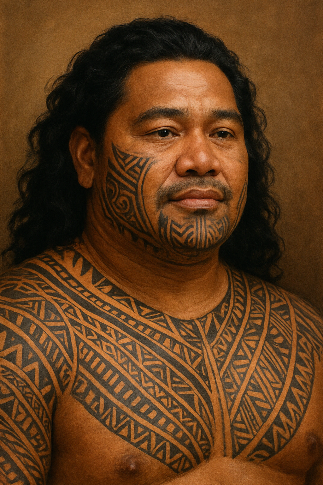

Kai – The Lost Wanderer
Community Storyweaver
Read biography
Kai was one of the first Polynesian explorers. With a name that means “Sea,” he believed it was his destiny to conquer the oceans. At just 14, he set sail and rarely returned to land. At 23, a devastating storm struck. Praying to Tangaroa, the Polynesian god of the sea, seemed futile as he was thrown overboard into the dark depths. Just when he thought it was his end, strange men on a metal vessel pulled him to safety.
With countless tales of seafaring, both legendary and real, Kai’s knowledge became invaluable. Despite skepticism, one of his rescuers recommended him to the Museum of Magic. There, his wisdom helped fill gaps in ancient cultural understanding, making him an essential contributor to the preservation of forgotten knowledge.
Prof. Thorne Blackwell
Anthropologist
Read biography
Born with knowledge of a language long thought extinct, Thorne struggled in childhood, finding it difficult to learn his native Swedish. Misunderstood as slow, he grew withdrawn—until he found companionship in a stray cat he named Rose. Their bond deepened his connection to nature, which always seemed to welcome him—until a wolf attacked Rose.
Saved by a kind nurse, Rose survived, and Thorne’s life changed forever. He pursued medicine, discovering that the strange language within him was one of flesh itself. His unique skills brought him to the Museum of Magic, where he began as a doctor and soon became an invaluable anthropologist, bridging science and the mysteries of humanity.
Selene Vire
Archaeologist
Read biography
From an early age, Selene was captivated by science and discovery. While others played, she experimented. Her brilliance was undeniable: at 12, she became the youngest researcher to present a groundbreaking discovery—a new form of energy beyond conventional physics, flowing through all living and nonliving things.
Though the scientific world clamored for her, an elderly woman revealed the impossible—control of that energy. Selene’s fascination deepened, but before she could ask further questions, the woman left only a business card: “Museum of Magic.” It was the start of Selene’s journey into mysteries beyond science.
Rocky
Chief Archivist
Read biography
During a ritual meant to commune with the dead, a nearby stone absorbed strange energies from overlapping ceremonies across time. To the shock of all, the stone gained awareness and power. As the ritual threatened to spiral out of control, the stone—later named “Rocky”—threw itself into the magic, closing the widening gate to the realm of death.
Hailed as one of the first heroes of the Museum, Rocky’s talents in ritual magic earned it a place of honor. When the ritual program was restricted due to casualties, Rocky was entrusted with safeguarding history itself, becoming the Museum’s Chief Archivist.